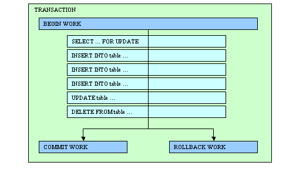

Summary:
See also: Connections, Static SQL, Dynamic SQL, Result Sets, SQL Errors, Programs.
A Database Transaction delimits a set of database operations that are processed as a whole. Database operations included inside a transaction are validated or canceled as a unique operation.

The database server is in charge of Data Concurrency and Data Consistency control. Data Concurrency control allows the simultaneous access of the same data by many users, while Data Consistency control gives each user a consistent view of the database.
Without adequate concurrency and consistency controls, data could be changed improperly, compromising data integrity. If you want to write applications that can work with different kinds of database servers, you must adapt the program logic to the behavior of the database servers regarding concurrency and consistency management. This requires good knowledge of multi-user application programming, transactions, locking mechanisms, isolation levels and wait mode. If you are not familiar with these concepts, carefully read the documentation of each database server that covers this subject.
Usually, database servers set exclusive locks on rows that are modified or deleted inside a transaction. These locks are held until the end of the transaction to control concurrent access to that data. Some database servers like Oracle implement row versioning (before modifying a row, the server makes a copy). This technique allows readers to see a consistent copy of the rows that are updated during a transaction not yet committed. When the isolation level is high (Repeatable Read) or when using a SELECT FOR UPDATE statement, the database server sets shared locks on read rows to prevent other users from changing the data fetched by the reader. Again, these locks are held until the end of the transaction. Some database servers like Informix allow read locks to be held regardless of the transactions (WITH HOLD cursor option), but this is not a standard.
Processes accessing the database can change transaction parameters such as the isolation level or lock wait mode. The main problem is to find a configuration which results in similar behavior on every database engine. Programs using Informix-specific behavior must be adapted to work with other database servers.
Here is the recommended configuration to get common behavior with all kinds of database engines:
When using this configuration, the locking granularity does not have to be set at the row level. For example, to improve performance with Informix databases, you can use the "LOCK MODE PAGE" locking level, which is the default.
A lot of applications have been developed for old Informix SE databases that do not manage transaction logging. These applications often work in the default lock wait mode which is "NOT WAIT". Additionally, applications using databases without transactions usually do not change the isolation level, which defaults to "Dirty Read". You must review the program logic of these applications in order to conform to the portable configuration.
To write portable SQL applications, programmers use the instructions described in this section to delimit transaction blocks and define concurrency parameters such as the isolation level and the lock wait mode. At runtime, the database driver generates the appropriate SQL commands to be used with the target database server.
If you initiate a transaction with a BEGIN WORK statement, you must issue a COMMIT WORK statement at the end of the transaction. If you fail to issue the COMMIT WORK statement, the database server rolls back any modifications that the transaction made to the database. If you do not issue a BEGIN WORK statement to start a transaction, each statement executes within its own transaction. These single-statement transactions do not require either a BEGIN WORK statement or a COMMIT WORK statement.
For historical reasons, the language is based on IBM Informix SQL language, which defines the transaction management instructions. IBM Informix database servers can work in different transaction logging modes:
The first mode does not allow transaction management and should be avoided. In the second and third modes, you can use the BEGIN WORK, COMMIT WORK and ROLLBACK WORK statements. In ANSI mode, you can only use the COMMIT and ROLLBACK statements, because transactions are implicit.
When using Informix databases, the type of logging defines the way you manage transactions in your programs. For example, when using an ANSI-compliant Informix database, you do not have to start transactions with BEGIN WORK, since these are implicit.
When using the Standard Database Interface (SDI) architecture, you are free to use any type of transaction logging with Informix databases. When using the Open Database Interface (ODI) architecture you are free to use the native transaction management statements supported by the underlying database server, but it is recommended that you follow the default (native) Informix logging, by using BEGIN WORK, COMMIT WORK and ROLLBACK WORK to manage transactions. At runtime, the database drivers can manage the execution of the appropriate instructions for the target database server. This allows you to use the same source code for different kinds of database servers.
The instructions described in this section must be executed as Static SQL statements. Even if it is supported by the Informix API, it is not recommended that you use the Dynamic SQL instructions to PREPARE and EXECUTE transaction management statements, because it can result in unexpected behavior when using other database servers.
Starts a database transaction in the current connection.
BEGIN WORK
Validates and terminates a database transaction in the current connection.
COMMIT WORK
Cancels and terminates a database transaction in the current connection.
ROLLBACK WORK
Defines the transaction isolation level for the current connection.
SET ISOLATION TO
{ DIRTY READ
| COMMITTED READ [LAST COMMITTED] [RETAIN UPDATE LOCKS]
| CURSOR STABILITY
| REPEATABLE READ }
When using a non-Informix database, the ODI driver executes the native SQL statement that corresponds to the specified isolation level.
Defines the behavior of the program that tries to access a locked row or table.
SET LOCK MODE TO { NOT WAIT | WAIT
[ seconds ] }
01MAIN02DATABASE stock03BEGIN WORK04INSERT INTO items VALUES ( ... )04UPDATE items SET ...05COMMIT WORK06END MAIN